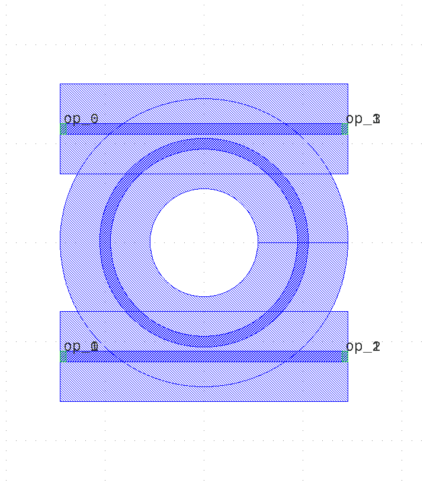

Module gpdk.components.ring_resonator.ring_resonator
Expand source code
from dataclasses import dataclass
from typing import Optional, Tuple, cast
from fnpcell import all as fp
from gpdk.components.straight.straight import Straight
from gpdk.technology import get_technology
from gpdk.technology.interfaces import CoreCladdingWaveguideType
@fp.pcell_class()
@dataclass(eq=False)
class RingResonator(fp.PCell):
"""
Attributes:
ring_radius: defaults to 5, Radius of the ring
top_spacing: defaults to 0.2, Spacing between top and ring waveguides
bottom_spacing: defaults to 0.2, Spacing between ring and bottom waveguides
ring_type: type of waveguide of ring
top_type: type of waveguide of top bus
bottom_type: type of waveguide of bottom bus
port_names: defaults to ["op_0", "op_1", "op_2", "op_3"]
Examples:
```python
TECH = get_technology()
ring = RingResonator(ring_type=TECH.WG.FWG.C.WIRE, top_type=TECH.WG.FWG.C.WIRE, bottom_type=TECH.WG.FWG.C.WIRE)
fp.plot(ring)
```

"""
ring_radius: float = fp.PositiveFloatParam(default=5, doc="Radius of the ring").as_field()
top_spacing: float = fp.PositiveFloatParam(default=0.2, doc="Spacing between top and ring waveguides").as_field()
bottom_spacing: float = fp.PositiveFloatParam(default=0.2, doc="Spacing between ring and bottom waveguides").as_field()
ring_type: CoreCladdingWaveguideType = fp.WaveguideTypeParam(type=CoreCladdingWaveguideType).as_field()
top_type: Optional[CoreCladdingWaveguideType] = fp.WaveguideTypeParam(type=CoreCladdingWaveguideType, required=False).as_field()
bottom_type: Optional[CoreCladdingWaveguideType] = fp.WaveguideTypeParam(type=CoreCladdingWaveguideType, required=False).as_field()
port_names: fp.IPortOptions = fp.PortOptionsParam(count=4, default=["op_0", "op_1", "op_2", "op_3"]).as_field()
def _default_ring_type(self):
return get_technology().WG.FWG.C.WIRE
def _default_top_type(self):
return get_technology().WG.FWG.C.WIRE
def _default_bottom_type(self):
return get_technology().WG.FWG.C.WIRE
def build(self) -> Tuple[fp.InstanceSet, fp.ElementSet, fp.PortSet]:
insts, elems, ports = super().build()
# fmt: off
ring_radius = self.ring_radius
top_spacing = self.top_spacing
bottom_spacing = self.bottom_spacing
ring_type = self.ring_type
top_type = self.top_type
bottom_type = self.bottom_type
port_names = self.port_names
if top_type is None:
top_type = ring_type
if bottom_type is None:
bottom_type = ring_type
min_radius_of_type = cast(float, ring_type.BEND_CIRCULAR.radius_eff) # type: ignore
assert ring_radius >= min_radius_of_type
ring = ring_type(fp.g.EllipticalArc(radius=ring_radius)).with_ports((None, None)).with_name("ring")
insts += ring
ring_core_width = ring_type.core_width
ring_cladding_width = ring_type.cladding_width
line_length = ring_radius * 2 + ring_cladding_width
top_core_width = top_type.core_width
top = Straight(name="top", length=line_length, waveguide_type=top_type, transform=fp.translate(-line_length / 2, ring_radius + top_spacing + top_core_width / 2 + ring_core_width / 2))
insts += top
ports += top["op_0"].with_name(port_names[0])
ports += top["op_1"].with_name(port_names[3])
bottom_core_width = bottom_type.core_width
bottom = Straight(name="bottom", length=line_length, waveguide_type=bottom_type, transform=fp.translate(-line_length / 2, -(ring_radius + bottom_spacing + bottom_core_width / 2 + ring_core_width / 2)))
insts += bottom
ports += bottom["op_0"].with_name(port_names[1])
ports += bottom["op_1"].with_name(port_names[2])
# fmt: on
return insts, elems, ports
if __name__ == "__main__":
from pathlib import Path
gds_file = Path(__file__).parent / "local" / Path(__file__).with_suffix(".gds").name
library = fp.Library()
TECH = get_technology()
# =============================================================
# fmt: off
library += RingResonator()
# fmt: on
# =============================================================
fp.export_gds(library, file=gds_file)
# fp.plot(library)Classes
class RingResonator (name: str = None, bands: Optional[FrozenSet[fnpcell.interfaces.IBand]] = None, patches: Tuple[fnpcell.interfaces.IElement, ...] = (), port_names: Sequence[Union[None, str, fnpcell.interfaces.Hidden]] = ('op_0', 'op_1', 'op_2', 'op_3'), transform: fnpcell.transform.Affine2D = None, ring_radius: float = 5, top_spacing: float = 0.2, bottom_spacing: float = 0.2, ring_type: CoreCladdingWaveguideType = None, top_type: Optional[CoreCladdingWaveguideType] = None, bottom_type: Optional[CoreCladdingWaveguideType] = None)-
Attributes
ring_radius- defaults to 5, Radius of the ring
top_spacing- defaults to 0.2, Spacing between top and ring waveguides
bottom_spacing- defaults to 0.2, Spacing between ring and bottom waveguides
ring_type- type of waveguide of ring
top_type- type of waveguide of top bus
bottom_type- type of waveguide of bottom bus
port_names- defaults to ["op_0", "op_1", "op_2", "op_3"]
Examples:
TECH = get_technology() ring = RingResonator(ring_type=TECH.WG.FWG.C.WIRE, top_type=TECH.WG.FWG.C.WIRE, bottom_type=TECH.WG.FWG.C.WIRE) fp.plot(ring)
Expand source code
class RingResonator(fp.PCell): """ Attributes: ring_radius: defaults to 5, Radius of the ring top_spacing: defaults to 0.2, Spacing between top and ring waveguides bottom_spacing: defaults to 0.2, Spacing between ring and bottom waveguides ring_type: type of waveguide of ring top_type: type of waveguide of top bus bottom_type: type of waveguide of bottom bus port_names: defaults to ["op_0", "op_1", "op_2", "op_3"] Examples: ```python TECH = get_technology() ring = RingResonator(ring_type=TECH.WG.FWG.C.WIRE, top_type=TECH.WG.FWG.C.WIRE, bottom_type=TECH.WG.FWG.C.WIRE) fp.plot(ring) ```  """ ring_radius: float = fp.PositiveFloatParam(default=5, doc="Radius of the ring").as_field() top_spacing: float = fp.PositiveFloatParam(default=0.2, doc="Spacing between top and ring waveguides").as_field() bottom_spacing: float = fp.PositiveFloatParam(default=0.2, doc="Spacing between ring and bottom waveguides").as_field() ring_type: CoreCladdingWaveguideType = fp.WaveguideTypeParam(type=CoreCladdingWaveguideType).as_field() top_type: Optional[CoreCladdingWaveguideType] = fp.WaveguideTypeParam(type=CoreCladdingWaveguideType, required=False).as_field() bottom_type: Optional[CoreCladdingWaveguideType] = fp.WaveguideTypeParam(type=CoreCladdingWaveguideType, required=False).as_field() port_names: fp.IPortOptions = fp.PortOptionsParam(count=4, default=["op_0", "op_1", "op_2", "op_3"]).as_field() def _default_ring_type(self): return get_technology().WG.FWG.C.WIRE def _default_top_type(self): return get_technology().WG.FWG.C.WIRE def _default_bottom_type(self): return get_technology().WG.FWG.C.WIRE def build(self) -> Tuple[fp.InstanceSet, fp.ElementSet, fp.PortSet]: insts, elems, ports = super().build() # fmt: off ring_radius = self.ring_radius top_spacing = self.top_spacing bottom_spacing = self.bottom_spacing ring_type = self.ring_type top_type = self.top_type bottom_type = self.bottom_type port_names = self.port_names if top_type is None: top_type = ring_type if bottom_type is None: bottom_type = ring_type min_radius_of_type = cast(float, ring_type.BEND_CIRCULAR.radius_eff) # type: ignore assert ring_radius >= min_radius_of_type ring = ring_type(fp.g.EllipticalArc(radius=ring_radius)).with_ports((None, None)).with_name("ring") insts += ring ring_core_width = ring_type.core_width ring_cladding_width = ring_type.cladding_width line_length = ring_radius * 2 + ring_cladding_width top_core_width = top_type.core_width top = Straight(name="top", length=line_length, waveguide_type=top_type, transform=fp.translate(-line_length / 2, ring_radius + top_spacing + top_core_width / 2 + ring_core_width / 2)) insts += top ports += top["op_0"].with_name(port_names[0]) ports += top["op_1"].with_name(port_names[3]) bottom_core_width = bottom_type.core_width bottom = Straight(name="bottom", length=line_length, waveguide_type=bottom_type, transform=fp.translate(-line_length / 2, -(ring_radius + bottom_spacing + bottom_core_width / 2 + ring_core_width / 2))) insts += bottom ports += bottom["op_0"].with_name(port_names[1]) ports += bottom["op_1"].with_name(port_names[2]) # fmt: on return insts, elems, portsAncestors
- fnpcell.pdk.pcell.PCell
- fnpcell.cell.cell_ref.CellRef
- fnpcell.mixin.transform_mixin.TransformMixin
- fnpcell.interfaces.ICellRef
- fnpcell.interfaces.IUpdatable
- fnpcell.interfaces.IElement
- fnpcell.interfaces.IRunnable
- fnpcell.interfaces.IAffineTransformable
Class variables
var bottom_spacing : floatvar bottom_type : Optional[CoreCladdingWaveguideType]var port_names : Sequence[Union[None, str, fnpcell.interfaces.Hidden]]var ring_radius : floatvar ring_type : CoreCladdingWaveguideTypevar top_spacing : floatvar top_type : Optional[CoreCladdingWaveguideType]
Methods
def build(self) ‑> Tuple[fnpcell.pdk.collection.InstanceSet, fnpcell.pdk.collection.ElementSet, fnpcell.pdk.collection.PortSet]-
Abstract method must be implemented to build a pcell.
Expand source code
def build(self) -> Tuple[fp.InstanceSet, fp.ElementSet, fp.PortSet]: insts, elems, ports = super().build() # fmt: off ring_radius = self.ring_radius top_spacing = self.top_spacing bottom_spacing = self.bottom_spacing ring_type = self.ring_type top_type = self.top_type bottom_type = self.bottom_type port_names = self.port_names if top_type is None: top_type = ring_type if bottom_type is None: bottom_type = ring_type min_radius_of_type = cast(float, ring_type.BEND_CIRCULAR.radius_eff) # type: ignore assert ring_radius >= min_radius_of_type ring = ring_type(fp.g.EllipticalArc(radius=ring_radius)).with_ports((None, None)).with_name("ring") insts += ring ring_core_width = ring_type.core_width ring_cladding_width = ring_type.cladding_width line_length = ring_radius * 2 + ring_cladding_width top_core_width = top_type.core_width top = Straight(name="top", length=line_length, waveguide_type=top_type, transform=fp.translate(-line_length / 2, ring_radius + top_spacing + top_core_width / 2 + ring_core_width / 2)) insts += top ports += top["op_0"].with_name(port_names[0]) ports += top["op_1"].with_name(port_names[3]) bottom_core_width = bottom_type.core_width bottom = Straight(name="bottom", length=line_length, waveguide_type=bottom_type, transform=fp.translate(-line_length / 2, -(ring_radius + bottom_spacing + bottom_core_width / 2 + ring_core_width / 2))) insts += bottom ports += bottom["op_0"].with_name(port_names[1]) ports += bottom["op_1"].with_name(port_names[2]) # fmt: on return insts, elems, ports